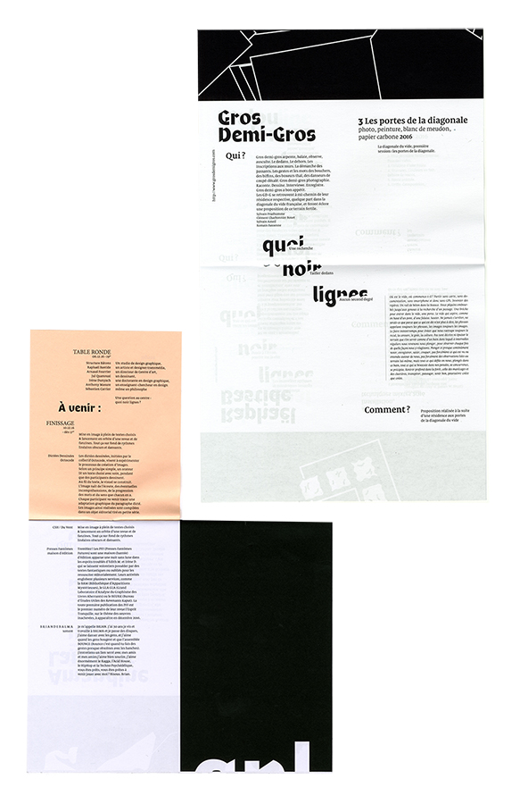
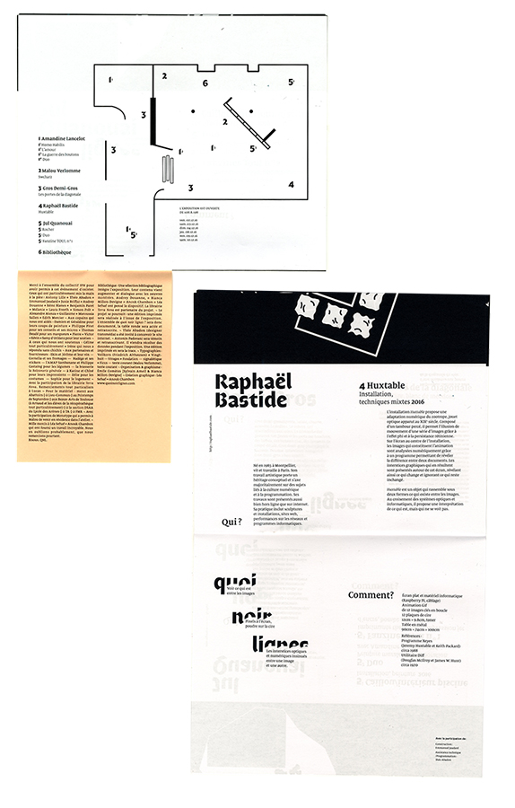
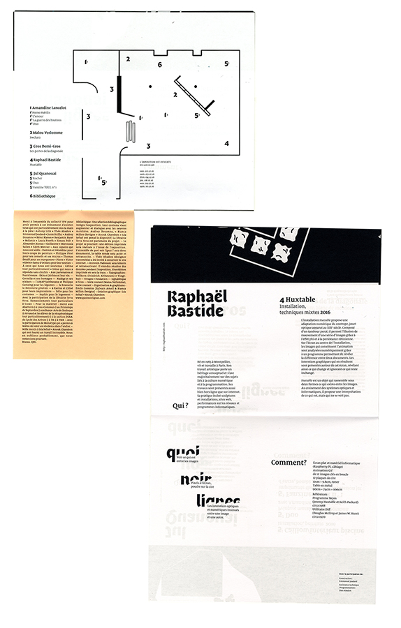
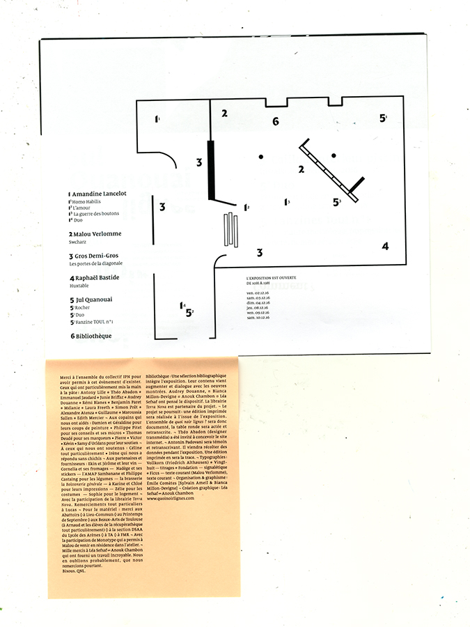
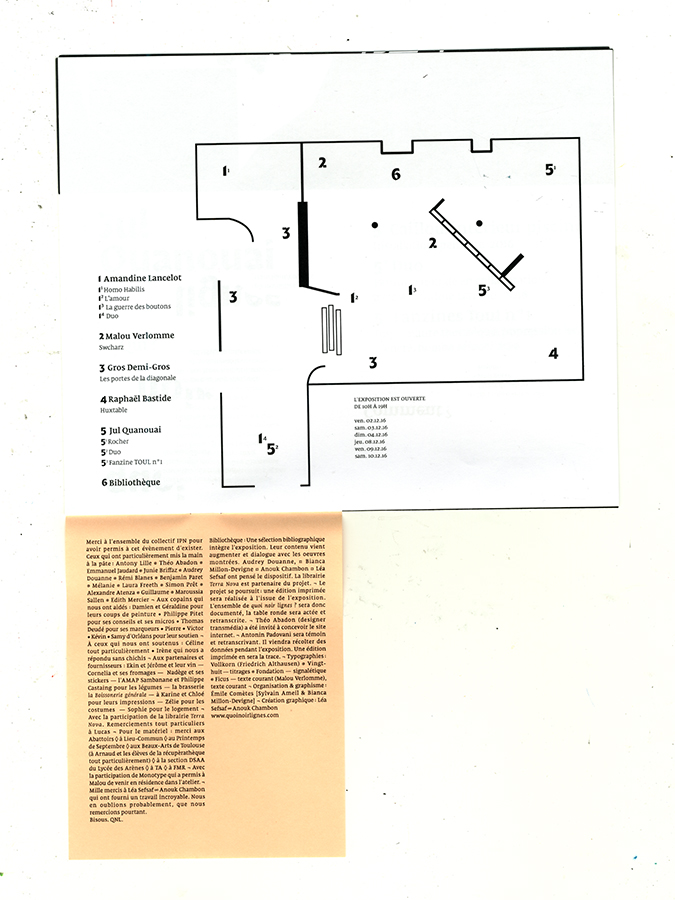
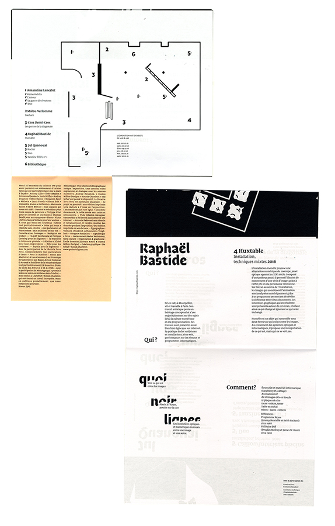
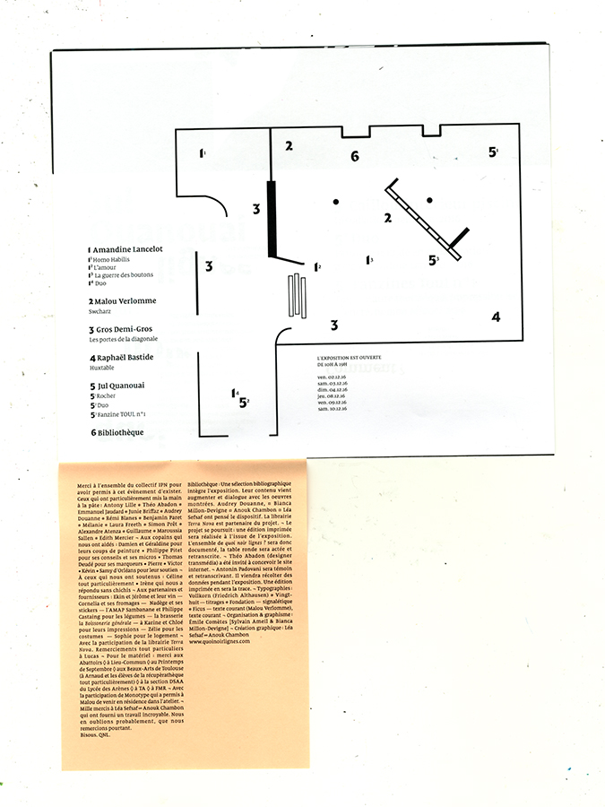

 

 



Dans le cadre d'un stage dans le collectif toulousain IPN, participation au montage et à la réalisation de l'exposition Quoi Noir Lignes. Conception et réalisation de l'édition de l'expo, de la signalétique et de l'achivage photographique et filmique de micros événements autour du graphisme. En partenariat avec Léa Sefsaf.